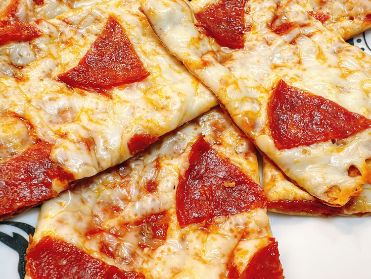

Lavash Pizza

Description
Lavash Pizza, A quick
crispy, and customiza ble thin-crust pizza made with lavash bread as the base
. Perfect for a light meal or snack, ready in under 15 minutes!
ingredients
-
1 large lavash bread
-
¼ cup pizza sauce (or pesto/olive oil)
-
½ cup shredded cheese (mozzarella, cheddar, or feta)
-
Toppings of choice (pepperoni, veggies, herbs)
-
Olive oil & spices (oregano, red pepper flakes)
Steps
-
Prep: Preheat oven to 400°F (200°C).
-
Assemble: Layer sauce, cheese, and toppings on lavash.
-
Bake: 5-8 mins until cheese melts and edges crisp.
-
Slice & Serve: Cut into squares or roll like a wrap.
Home